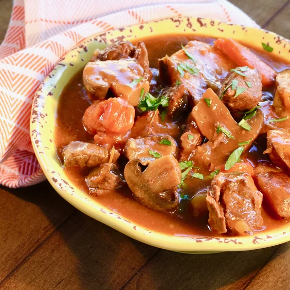

Best Beef Stew

Instant Pot Best Beef Stew
This beef stew is the ultimate, hearty, melt-in-your mouth comfort food of all, and so easy to make in the instant pot for a simple midweek dinner.
Ingredients:
You will need to have the following ingredients (in their right quantities) in place;
- 1 tablespoon butter
- 1 pound beef chuck, cut into 1-inch cubes
- 4 Yukon Gold potatoes, cubed
- 1.5 cups mushrooms, halved
- 1 onion, cut into 6 wedges
- 2 carrots, cut into 0.5-inch thick slices
- 2 cloves garlic, minced
- 3 cups beef broth
- 1 tablespoon Worcestershire sauce
- 1 tablespoon tomato paste
- 1 teaspoon salt
- Ground black pepper and dried rosemary, 0.5 teaspoon each
Steps/ Directions how to..!
- Turn on the pressure cooker (instant pot) and select saute functions. Melt butter and cook beef chuck cubes in batches until browned on all sides, 5 minutes per chuck.
- Return all beef chucks to the pot. Add potatoes, mushrooms, onion, carrots, and garlic; cover with beef broth. Stir in Worcestershire sauce, tomato paste, salt, pepper, and rosemary. Close and lock the lid. Selct Meat/Stew function according to manufacture's instructions; set timer for 35 minutes. Allow 10 to 15 minutes for pressure to build.
- Release pressure using the natural release method according to manufacture's instructions, 10 to 40 minutes. Unlock and remove the lid.